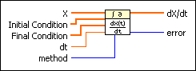
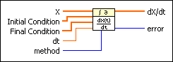
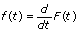
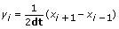
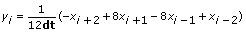
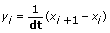
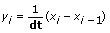

Derivative x(t) VI
Owning Palette: Integration & Differentiation VIs
Requires: Full Development System
Performs a discrete differentiation of the sampled signal X.

 Add to the block diagram Add to the block diagram |
 Find on the palette Find on the palette |
Owning Palette: Integration & Differentiation VIs
Requires: Full Development System
Performs a discrete differentiation of the sampled signal X.

| Add to the block diagram |
Find on the palette |
 |
X is the sampled signal from time 0 to n – 1 where n is the number of elements in X. | ||||||||
|
Initial Condition specifies the initial condition of X in the differentiation calculation. If method is 2nd Order Central or Backward, the VI uses the first element in Initial Condition to calculate the derivative. If method is 4th Order Central, the VI uses the first two elements in Initial Condition to calculate the derivative. The default is [0]. | ||||||||
|
Final Condition specifies the final condition of X in the differentiation calculation. If method is 2nd Order Central or Forward, the VI uses the first element in Final Condition to calculate the derivative. If method is 4th Order Central, the VI uses the first two elements in Final Condition to calculate the derivative. The default is [0]. | ||||||||
 |
dt is the sampling interval and must be greater than zero. The default is 1.0. If dt is less than or equal to zero, the VI sets dX/dt to an empty array and returns an error. | ||||||||
 |
method specifies the differentiation method.
|
||||||||
 |
dX/dt is the derivative of the input signal X. | ||||||||
 |
error returns any error or warning from the VI. You can wire error to the Error Cluster From Error Code VI to convert the error code or warning into an error cluster. |
The differentiation f(t) of a function F(t) is defined as

Let Y represent the sampled output sequence dX/dt.
If method is 2nd Order Central, Y is given by the following equation:

for i = 0, 1, 2, …, n – 1,
where n is the number of samples in x(t), x–1 is the first element in Initial Condition, and xn is the first element in Final Condition.
If method is 4th Order Central, Y is given by the following equation:

for i = 0, 1, 2, …, n – 1,
where n is the number of samples in x(t), x–2 and x–1 are the first and second elements in Initial Condition, xn and xn + 1 are the first and second elements in Final Condition.
If method is Forward, Y is given by the following equation:

for i = 0, 1, 2, …, n – 1,
where n is the number of samples in x(t) and xn is the first element in Final Condition.
If method is Backward, Y is given by the following equation:

for i = 0, 1, 2, …, n – 1,
where n is the number of samples in x(t) and x–1 is the first element in Initial Condition.
The Initial Condition and Final Condition minimize the error at the boundaries.
Refer to the Probability Density VI in the labview\examples\Mathematics\Probability and Statistics directory for an example of using the Derivative x(t) VI.
 Open example Find related examples
Open example Find related examples